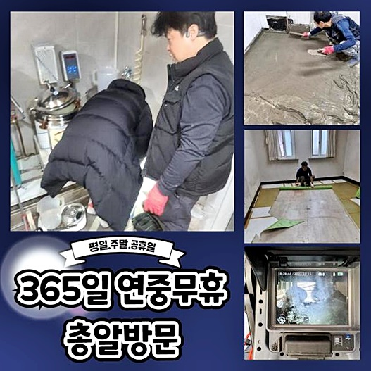
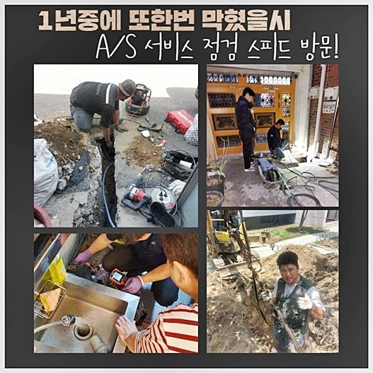
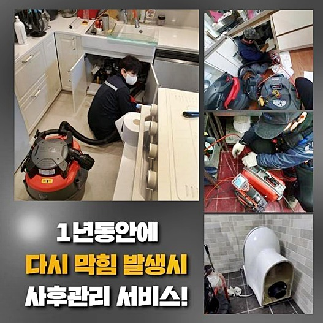
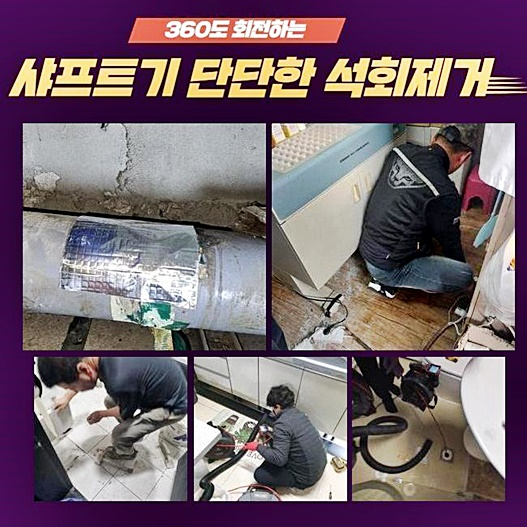
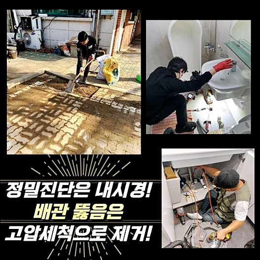
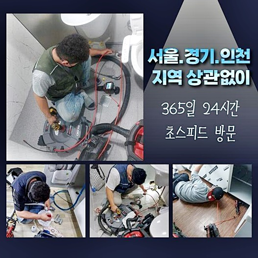
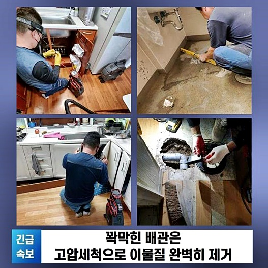

🏠 관악구 낙성대동씽크대뚫음 신원동 하수관고압세척 설비출장
용인시 처인구 누수수리 전문 시공 후기

📋 작업 개요
- 위치: 용인시 처인구, 수원시 영통구, 화성시 동탄
- 서비스 유형: 누수수리, 고압세척, 내시경점검
- 작업 일시:
- 업체명: 하수구수사대 (010-5615-2118)
🔍 문제 상황
관악구 낙성대동씽크대뚫음 신원동 하수관고압세척 설비출장
물이 안내려가는 건 일반의 거주지와 상업빌딩 등에서 불현듯 생겨나는 문제랍니다
더군다나 밀집도가 높은 상업건축물이나 집합건축물에서는 자주 발생되는데, 외부의 잔해물이 배수관으로 흘러가서입니다
통수되는것이 현저하게 저속이라던가 솟구치는 피해가 생겨날 시엔 전문업체의 손을 빌려 서둘러 증세를 안정화하는게 1순위에요
배수장애가 나타나는 1순위는 하수관에 쌓인 오염물을 빼놓을 수 없겠습니다
하수시스템의 경우 노하우나 전문성이 떨어지는 여러분들이 해결하는게 보통이 아니기에 전문성들을 가지고 있는 자에게 도움요청을 하는게 우선입니다
때론 가정에서 쓰시는 압축기나 세척용액을 사용해서 일단은 피해를 해결하려고 도전하는 경우도 있지만, 온전한 조치가 안됩니다
또한 오염물을 확실하게 세척하질 못해 동일한 피해가 불거질 여지가있고 파손의 수도 있기에 조심성이 요구됩니다
주방이라면 하수관에 쌓여버린 오염물로 야기되는 장소가 8할 이상이죠

🔎 원인 분석
💡 전문가 진단: 정밀 진단 장비를 사용하여 슬러지의 고착 여부를 판명하고 타격/세척 작업을 실시했습니다.
기름류도 하수도에 쌓이게되고 또한 저온의 수돗물과 섞이면서 딱딱해지며 통수 공간을 좁히는 사태를 불러오죠
머리카락으로 말씀드리면 배수구로 나가게 되며 중간중간에 침전되는걸 기초로하여 잔여물질이 뒤엉키면 크기들을 불게하고 배관을 온전히 막게 될테죠
잔해를 완전히 청소하도록 가정에서 구비해놓은 용품들로 무작정 해결을 시도해보는 것보다는
전문적 장치와 노하우들을 지속하는 전문가들에게 도움을 청하는게 좋겠습니다
안전하지 못한 대응으로 해결들을 강행한다면 손상들이슈나 역류증세를 야기시키는데 자가조치들은 그리고 상황을 수렁으로 빠트릴뿐 아니라 경제적 지출들을 증가시켜요
그렇기에 문제들이 발생되었을 시 곧장 전문진들에게 도움을 청하는게 안전한 방법입니다
갑작스러운 문제로 하수구 증상을 고쳐낸 사례를 말씀드리고자합니다
고객분은 이따금씩 물배출이 떨어지고 정체해버리는 증상이 나타났는데도
피해를 해결하지않다가 증상완화를 연기하셨다가 얼마전 증상이 불거진 상황들을 보시고는 재빨리 저희에게 문의해주셨습니다
통수결함은 이용형태와 상관없는채로 어디라도 종종 발생되며 석회라던지 통수를 방해하는 이물이 배수관으로 누적되는걸 기초하여 발생됩니다

🔧 작업 과정
기름의경우에는 자가적으로 녹아내리지않고 온도가 낮은 수도와 섞이게되면서 벽부분에도 고착되어 문제들을 발생시키죠
막혀버린 상황을 해소시키도록 1차적으로 내시경기기를 써서 내측의 양상을 들여다봤습니다
내시경장비를 쓴 검수는 막혀버린 스팟과 특성들을 확실하게 확인하기위한것이라 볼 수 있죠
카메라부분과 이어져있는 송출부를 샅샅히 들여다보고 위치마다 검수를 진행해보니 공용배관 속에 대량의 잔여물질이 쌓인걸 목격했죠
해당 시점엔 분쇄를 목적으로 하는 도구들의 가용보단 고압노즐을 가용시키는게 이전의 작업들보다 효과가 있는 방식이라 보셔도 됩니다
고압세척의 경우 하수설비에 고압수를 이용해 슬러지와 같은 잔해를 세척해 없애주는 조치법으로 진행되고 있어요
작업진행 중엔 배수관의 용도들과 부위마다 상이한 분사를 진행시켜야 깨진다거나 파손등이 나타나는 것을 예방할수있는데요
저희업체는 수많은 작업들로 이같은 사실들을 이해하고 있으므로 고압의 분사를 진행하고자 한다면 구조적인 특성을 확실히 파악한 후 부위마다 상이한 압을 적용시켜 세척해결을 이행해요
청소가 끝나면 또 내시경기계를 삽입해 하수관을 검수하고 잔여물이 잔존하는지 검산과정을 거쳐요
내시경기기를 반복해주는 과정들을 이행해 부위별 문제나 잔해물의 형상을 진단하면서 해당 작업들이 실시되고
부위마다 검수하고 지속적인 세척해결들을 진행시키면 오래도록 하수관로에 쌓인 오염원을 청결하게 제거된 형태를 확인하게 되요
수리가 끝났을때는 문제와 연관된 설비들을 살펴보는 절차들도 수행하였고 확인하고서 복구가 안된 부위가 파악된다면 우선적으로 추가 문제완화들을 진행하니 안심되실거에요
하수시스템 오류가 발생되었음에도 불구하고 특별한 대응없이 방임적인 태도로 일관하면 누수되는 문제들이 발생보셔도 됩니다
누수의 경우 막혔을때보다 해결이 어려워지며 비용적 측면도 무시할 수 없어 이같은 증상들이 보여졌을땐 신속히 대처하는 것이 합리적입니다
여러분께서 막혀버리는 사안을 피하고자하면 배수구부분에 빈틈없이 설치할 수 있는 다양한 거름망용품을 이용해서 통수를 방해하는 잔해가 흐르게하는걸 막아서는것도 훌륭한 방법들이 될거에요


✅ 작업 완료
노력이 무색하게 문제가 갑자기 나타나면 초반에 인지하시고 전문업체의 도움으로 안정화하는게 최선의 방법들이라 생각하셔도 무방해요
전문기기들과 기술들을 마련한 업체와 증상을 시정하면 통수가 안되는 사태는 간소하게 해결할 수 있죠
저희로 말씀드리면 관련 해결들을 문의하면 의뢰인분의 고충을 재빨리 해결한다는 마인드로 시공을 진행시켜요
전문가가 요구될 땐 고민하시기보단 즉각 저희의 전문인들과 함께 해보세요!




⚠️ 하수구 배관 막힘 예방 및 관리 가이드
- ✅ 머리카락, 비닐, 물티슈 등 물에 분해되지 않는 이물질은 절대 흘려보내지 마세요.
- ✅ 기름기 많은 식기는 설거지 전 키친타올로 먼저 기름때를 닦아내세요.
- ✅ 주기적으로 배수구에 뜨거운 물을 가득 부어주어 유지방 고착을 방지하세요.
- ✅ 작업 후 1년 이내 재발 시 무상 A/S 보증 서비스를 제공합니다.
💡 핵심 정리
- 확실한 장비 작업(내시경 점검 및 샤프트 스케일링)으로 원인을 뿌리 뽑습니다.
- 작업 후 1년 이내에 동일한 부위 재발 시 100% 무상 A/S 서비스를 보장합니다.
- 서울 · 경기 · 인천 전 지역에 24시간 언제든 긴급 출동할 수 있도록 항시 대기 중입니다.
❓ 자주 묻는 질문 (FAQ)
🚨 용인시 처인구 누수수리 문제로 고민이신가요?
정확한 원인 진단과 확실한 시공으로 재발 없는 해결을 약속드립니다.
24시간 긴급 출동 | 서울 · 경기 · 인천 전지역 | 1년 내 재발 시 무상 A/S